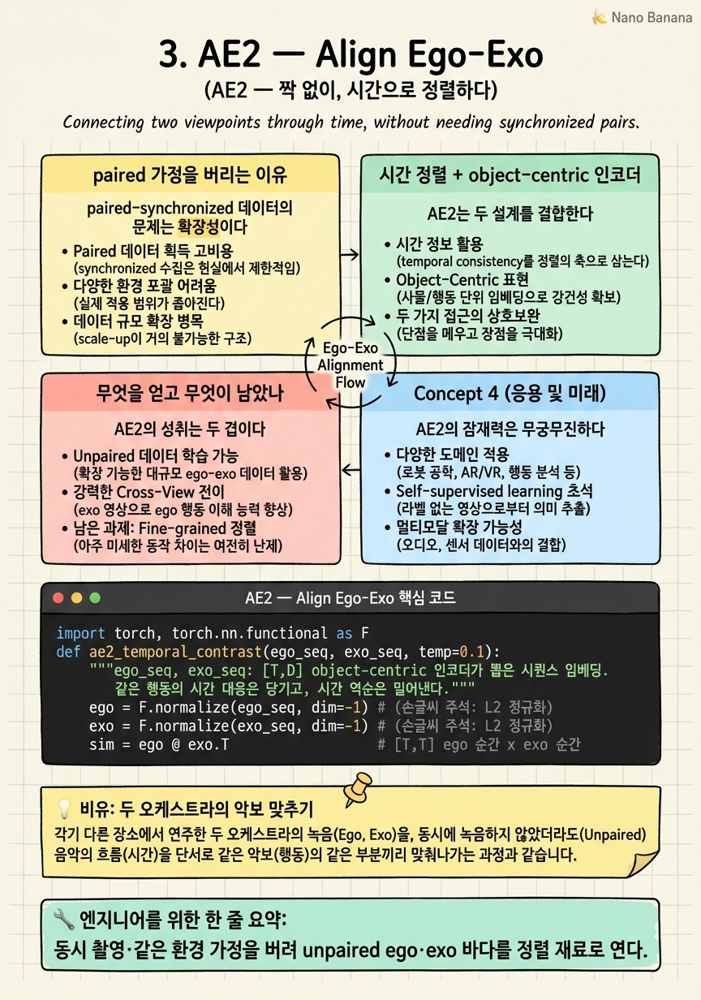

AE2 — Align Ego-Exo
세상의 ego 영상과 exo 영상은 대부분 서로 남남이다 — 같은 순간을 찍은 짝이 아니다. 이 '짝 없는 바다'를 어떻게 정렬 재료로 쓸 것인가?

🎯 학습 목표
- paired-synchronized 가정이 왜 확장의 걸림돌인지 안다
- 시간 정렬(temporal alignment)로 unpaired 데이터를 정렬하는 원리를 이해한다
- object-centric 인코더가 손·객체에 집중하는 이유를 안다
- 시간 역순 프레임을 negative로 쓰는 대조 목적함수를 설명한다
- feature·시간 정렬이 공간 대응과 어떻게 다른지 구분한다
1·2장은 조용한 가정을 깔고 있었다 — 같은 행동을 두 시점으로 동시에 찍은 짝 데이터가 있다는 것. 그러나 현실에서 이런 짝은 극히 드물다. 세상에 널린 ego 영상과 exo 영상은 대부분 서로 무관하게, 다른 사람이 다른 때 다른 곳에서 찍은 것이다.
AE2(NeurIPS 2023)는 이 강한 가정을 정면으로 깬다. 동시 촬영도, 같은 환경도 아닌 ego·exo 영상을 정렬하겠다는 것이다. 재료는 "짝 없는(unpaired)" 두 영상 더미뿐이다.
열쇠는 시간이다. 같은 종류의 행동(예: 커피 내리기)은 시점이 달라도 비슷한 시간적 진행을 갖는다 — 물을 붓고, 젓고, 따른다. AE2는 ego와 exo를 시간축에서 정렬해, "이 순간의 ego는 저 순간의 exo에 대응한다"는 대응을 시간으로 찾는다. 그 과정에서 시점 불변의 미세 행동 표현이 창발한다. 이 챕터는 '동시성'이라는 목발을 버리고 '시간 구조'로 정렬하는 전환을 다룬다.
핵심 내용
paired 가정을 버리는 이유
paired-synchronized 데이터의 문제는 확장성이다. Charades-Ego 같은 데이터를 만들려면 같은 배우가 같은 행동을 두 시점으로 연기해야 한다. 이는 비싸고, 규모가 제한되며, 도메인이 좁다(연출된 실내 행동).
만약 짝 없이 정렬할 수 있다면, 세상의 모든 ego 영상과 모든 exo 영상이 잠재적 학습 재료가 된다. 이것이 AE2가 여는 문이다 — 데이터 가정의 완화가 곧 규모의 해방이다.
하지만 짝이 없으면 "이 ego 클립의 짝은 이 exo 클립"이라는 감독 신호가 사라진다. 무엇을 정렬 기준으로 삼을 것인가? AE2의 답은 행동의 시간적 진행 구조다. 같은 행동은 시점이 달라도 유사한 단계 순서를 밟으므로, 그 순서를 정렬의 앵커로 쓴다.

시간 정렬 + object-centric 인코더
AE2는 두 설계를 결합한다.
첫째, object-centric 인코더. ego와 exo의 배경은 완전히 다르지만, 손과 조작 객체는 두 시점에 공통으로 등장한다. AE2는 인코더가 전체 장면이 아니라 손·활성 객체 영역에 집중하게 만든다(ResNet-50 + transformer). 배경이라는 시점 종속 노이즈를 걷어내고, 시점 불변의 공통 신호에 표현을 앉힌다.
둘째, 시간 대조 목적함수. ego와 exo 시퀀스를 시간축에서 정렬하되, 영리한 negative를 쓴다 — 시간을 뒤집은(reversed) 프레임. 물을 붓는 정방향과 거꾸로 감은 역방향은 시각적으로 비슷하지만 행동으로는 정반대다. 역순을 negative로 주면, 네트워크는 단순 외형이 아니라 행동의 방향성·시간 구조를 학습한다.
이 둘이 합쳐져, 짝 없는 영상에서도 "이 ego 순간 ↔ 저 exo 순간"의 시간 대응이 잡히고, 그 대응을 만족하는 미세한 view-invariant 표현이 형성된다.

무엇을 얻고 무엇이 남았나
AE2의 성취는 두 겹이다. 데이터 측면에서 동시 촬영이라는 목발을 버려 unpaired 바다를 정렬 재료로 열었다. 표현 측면에서 object-centric + 시간 대조로 '커피 젓기'와 '커피 따르기'를 구분할 만큼 미세한(fine-grained) 행동 표현을 얻었다 — 1장의 거친 triplet이 못 하던 것이다.
그러나 정렬의 성질은 여전히 시간·feature 수준이다. "이 ego 순간이 저 exo 순간에 대응한다"는 시간 대응은 주지만, "이 ego 프레임의 컵이 저 exo 프레임의 어느 픽셀·객체에 대응한다"는 공간 대응은 주지 않는다. 또한 손·활성 객체라는 prior에 의존해, 그 prior가 약한 도메인에서는 흔들린다.
정리하면 AE2는 정렬의 축을 '동시성'에서 '시간 구조'로 옮겨 규모를 해방했지만, 대응의 해상도는 여전히 시간·표현에 머문다. 4장 BYOV는 같은 unpaired 전제에서 대조 대신 마스킹으로 표현을 강화하고, 6장부터는 드디어 공간(객체) 대응으로 넘어간다.
💡 비유로 이해하기
같은 교향곡을 서울과 파리의 오케스트라가 각각 다른 날 연주해 녹음했다(unpaired). 두 녹음은 같은 순간이 아니지만, 악곡의 진행은 같다 — 1악장, 전개, 클라이맥스, 종결.
AE2는 이 시간 구조로 두 녹음을 맞춘다. "서울의 클라이맥스 ↔ 파리의 클라이맥스"처럼 곡의 단계로 정렬하니, 동시 녹음이 아니어도 대응이 잡힌다. object-centric 인코더는 홀의 잔향(배경)을 무시하고 멜로디(손·객체)에만 귀 기울이는 것과 같다.
역순 negative는 영리한 채점이다. 곡을 거꾸로 튼 것은 음색은 비슷해도 음악으로는 틀렸다. "정방향과 역방향을 구분하라"고 훈련하면, 연주자는 표면 음색이 아니라 곡의 방향과 흐름을 배운다. 단, 이 방식은 "몇 악장 언저리"까지 맞출 뿐, "바이올린 주자의 이 활 놀림이 저쪽의 어느 주자에 대응하는가"는 모른다 — 그게 뒤 챕터의 과제다.
💻 코드 예시
AE2의 두 핵심 — 시간 대조와 역순 negative — 를 개념 구현으로 보자.
import torch, torch.nn.functional as F
def ae2_temporal_contrast(ego_seq, exo_seq, temp=0.1):
"""ego_seq, exo_seq: [T,D] object-centric 인코더가 뽑은 시퀀스 임베딩.
같은 행동의 시간 대응은 당기고, 시간 역순은 밀어낸다."""
ego = F.normalize(ego_seq, dim=-1)
exo = F.normalize(exo_seq, dim=-1)
sim = ego @ exo.T # [T,T] ego 순간 x exo 순간
# positive: 대각(같은 진행 단계) / negative: 시간 역순 시퀀스
exo_rev = F.normalize(exo_seq.flip(0), dim=-1)
sim_rev = ego @ exo_rev.T
pos = torch.diag(sim) # 시간 정렬된 대응
neg = torch.diag(sim_rev) # 역순 = 행동 방향 반대
return -torch.log(torch.sigmoid((pos - neg) / temp)).mean()
ego = torch.randn(8,64); exo = ego.roll(1,0)+0.1*torch.randn(8,64) # 유사 진행
print("temporal-contrast loss:", ae2_temporal_contrast(ego, exo).item())핵심은 pos(시간 정렬된 대응)를 neg(시간 역순 대응)보다 크게 만드는 것이다. exo_seq.flip(0)가 역순 negative — 외형은 비슷하지만 행동 방향이 반대인 하드 negative다. 이걸 밀어내면 네트워크는 단순 외형이 아니라 시간적 진행·방향을 학습한다. ego_seq/exo_seq가 object-centric 인코더 출력이라는 점이 배경 노이즈를 이미 걷어낸 전제다. 짝 라벨 없이 시간 구조만으로 정렬이 창발한다.
🏭 현업에서의 평가
✅ 시니어가 보는 것
- paired 가정을 완화하는 것과 규모 해방의 연결을 설명하는가
- 시간 정렬을 unpaired 감독 신호로 쓰는 원리를 아는가
- 역순 negative 같은 하드 negative의 설계 의도를 이해하는가
⚠️ 레드 플래그
- unpaired인데 여전히 프레임 단위 짝 감독을 가정
- object-centric prior의 필요성(배경 노이즈)을 간과
- 시간 정렬과 공간 대응을 같은 것으로 혼동
🎤 예상 인터뷰 질문 (클릭하면 모범답안)
paired 데이터 가정을 버리면 무엇을 얻고 무엇을 잃는가?
얻는 것은 규모다 — 세상의 무관한 ego·exo 영상 전부가 재료가 된다. 잃는 것은 '이 ego의 짝은 이 exo'라는 직접 감독 신호다. AE2는 그 손실을 행동의 시간적 진행 구조로 메운다. 같은 행동은 시점이 달라도 비슷한 단계 순서를 밟으므로 시간을 정렬 앵커로 쓴다.
왜 시간 역순 프레임을 negative로 쓰는가?
역순은 외형은 유사하나 행동 방향이 반대인 하드 negative다. 이를 밀어내도록 학습하면 네트워크가 표면 외형이 아니라 시간적 방향·진행을 학습하게 되어, '젓기'와 '따르기'처럼 미세하고 순서 의존적인 행동을 구분하는 view-invariant 표현이 형성된다.
object-centric 인코더가 없으면 무엇이 문제인가?
ego·exo의 배경은 완전히 달라 시점 종속 노이즈가 크다. 전체 장면을 인코딩하면 이 노이즈가 정렬을 방해한다. 손·활성 객체는 두 시점의 공통 신호이므로, 거기에 집중해야 배경을 무시하고 시점 불변 표현을 얻는다. 단 이 prior가 약한 도메인에선 성능이 흔들린다.
✨ 핵심 요약
동시성 목발 제거
동시 촬영·같은 환경 가정을 버려 unpaired ego·exo 바다를 정렬 재료로 연다.
시간이 감독을 대체
같은 행동의 시간적 진행 구조를 정렬 앵커로 삼아 짝 라벨 없이 대응을 찾는다.
object-centric 인코더
배경(시점 종속 노이즈) 대신 손·활성 객체(시점 공통)에 표현을 앉힌다.
역순 negative
시간을 뒤집은 하드 negative로 외형이 아닌 행동의 방향·진행을 학습시킨다.
미세 행동 표현
'젓기 vs 따르기'를 구분할 만큼 fine-grained — 1장 triplet보다 정밀하다.
규모의 해방
데이터 가정 완화가 곧 학습 재료의 규모 확장으로 이어진다.
공간 대응은 미해결
정렬이 시간·feature 수준 — 픽셀·객체 대응은 6장부터의 과제로 남는다.
- Xue, Grauman (2023). Learning Fine-grained View-Invariant Representations from Unpaired Ego-Exo Videos via Temporal Alignment (AE2). NeurIPS 2023. arXiv:2306.05526